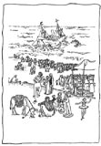

|
English Ha-Aretz (Herald Tribune), June 10, 2005
By Yael Dar
|
 |
"Massa habubot le-eretz yisrael" by Abraham Regelson, with illustrations by Nahum Guttman, Aryeh Hatzor, Bina Gevirtz, Aryeh Navon, Shlomit Oltchick, Biblio Books, 113 pages [translated into English by Sharona Tel-Oren as "The Dolls' Journey to Eretz-Israel," Biblio Books, $12]
The Hebrew children's book, "Massa habubot le-eretz yisrael" ("The Dolls' Journey to Eretz-Israel"), in its new edition is a product aimed at a relatively new market demand in the area of publishing: a fierce nostalgia among people of 45-plus for the books of their childhood. Unlike the classic Hebrew children's books - Haim Nachman Bialik's "Bo elai parpar nehmad" ("Poems and Songs" for children), Leah Goldberg's "Ayeh pluto" ("Where is Pluto?") and Miriam Yalan-Shtaklis' "Atzu ratzu gamadim" ("Hurry, Hurry Dwarves") - that have stood the test of time and simultaneously address both those who are children now and those who used to be children, the edition of the book reviewed here is addressed primarily to child readers who have grown up in the meantime. To move them there is no need for colorful illustrations or a shiny, attractive cover. It is enough that the old story be printed again, and along with it a selection of the illustrations that appeared over the years, for a rich variety of childhood memories to rise to the surface.
This thin, soft-cover volume printed in black and white contains three different texts. The main text, of course is the exciting story of Sharona's nine dolls from the United States and their adventures en route to the land of Israel. The dolls, as Israelis of a certain age will remember, stayed behind with Phyllis, Sharona's friend, after the family departed. The poor dolls miss Sharona very much and Phyllis finally sends them to Palestine on a long journey that begins back in the U.S. with a trip that is not at all easy to the New York port in car driven by a tipsy doll-driver called Viking.
Incidentally, anyone who hasn't read the book again should be warned: As in an old arena of childhood to which one returns later and discovers that the forest is just a small grove of trees and the long way to the kindergarten is just a short path, so the perils of the dolls' journey, which once seemed so difficult and abundant, are not so terrible at all and the happy end comes much faster than it used to.
First published in 1935, this book became, as noted, one of the realms of our collective nostalgia. The two texts that have been added to the beginning and end of the old story relate to readings that seek a past: the story of the Regelson family's past and in particular the story of their attempt to immigrate to the land of Israel in the 1930s, upon which the children's book is based.
In the prologue, which is aimed nevertheless at the children of today, there is an attempt to arouse their curiosity and empathy for times gone by. In this section, entitled "A Journey Backward in Time," the author writes: "They call me Savta Sharona, my 16 lovable grandchildren." This is none other than Sharona the little girl, the "mother" of the dolls in the book, who tells in simple and personal language about her childhood in the U.S. and the land of Israel, and about the circumstances in which the book was originally written by her father - the poet, writer and translator Abraham Regelson.
"When Sharona had reached the age of 3 - (believe it or not, even Savtas were once 3 years old!) - her parents decided to immigrate to what was then early Jewish Palestine. Sharona had to leave her family of dolls behind, with her young neighbor/friend Phyllis. The voyage by ship was long and arduous, and the living conditions they encountered in the young, barren desert city of sand dunes and camels, little Tel Aviv, were harsh and primitive.
"Imagine what a happy day it was for Sharona when the mail brought her a package from America, containing her beloved dolls! Her excitement inspired Sharona's Abba to write a book about the dolls' journey across the Atlantic, recounting in it the family's trials and tribulations of travel and absorption, with more than a pinch of imaginative hilarity thrown in, and using biblically flavored language."
The other accompanying text, "Epilogue: Fantasy - or ... A Family History," is also signed by Sharona Tel-Oren, and in it she addresses the adult readers. Here there is a generous recounting of Regelson's biographical story, from his immigration from Europe to the U.S. as a child in 1905, through his life in America, his marriage to Chaya, the building of his family and life in Cleveland.
In 1933 the couple decided to immigrate to the land of Israel with their four children. There Regelson joined the editorial board of the now-defunct Histadrut labor federation newspaper Davar and helped Yitzhak Yatziv found Davar L'yeladim (Davar for Children). In 1934 "The Dolls' Journey to Eretz-Israel," was serialized in the children's supplement and garnered great success. After three difficult years in the land of Israel the family returned to the U.S., and there Regelson earned his living mostly by writing for the Yiddish press. Until the family's second immigration to Israel in 1949, Regelson remained very involved in the activity of Davar L'yeladim and in literary writing for children in general.
Thus, in a letter that I found in the archive of Yitzhak Yatziv, the editor of Davar L'yeladim, which was sent from the U.S. in March, 1947, Regelson recommended to Yatziv that he borrow from the Americans the model of the comic strip, with the appropriate changes of course: "The American newspapers have many illustrated adventures in episodes that have no end. There is also a huge industry of comic books in color. These deal for the most part with wonder-working heroes, detectives and intelligent animals. With a bit of artistic improvement and with recourse to pioneering and historical contents, the likes of these would be a success in the land of Israel and would also be educational."
In fact, in its time "The Dolls' Journey to Eretz-Israel" was a rare combination of bourgeois American sweetness and Zionist ideology. Alongside the many immigration stories to which the children here were exposed during those years, the book had a special magic. Here, for a change, the delicacy and fragility of the immigrant girls was stressed. There was an emphasis on homesickness, on difficulties in adjusting. All of these were heartwarming luxuries in the model of the story of the ideological immigration that was recounted here endlessly in 1930s, 1940s and 1950s.
Take, for example, the following bit, which confronts the dolls with the reality of the difficult land of Israel:
"At last the ship laid anchor not far from the port of Jaffa. Using a wobbly rope ladder and aided by tall Arab port laborers, the dolls were lowered onto small boats, which were rowed by Arab youths. The sea was so turbulent it almost seemed that the boats might capsize. But they were navigated safely between the boulders of the Jaffa coast, and arrived at shore without mishap. The large hands of the port-workers again lifted the dolls out of the boats and set them down on solid land.
"Looking around in all directions, the dolls eagerly sought their Imma Sharona, but she was nowhere to be seen. Instead, they were received by three British officials, who stated: "Customs duty for girl dolls - three groosh each. For boy dolls - 10 groosh each, by order of His Majesty's Constitution and By-Laws ... The officers led the seven girl dolls, together with their two brothers, into a narrow, dirty room with iron bars on the windows ... There they were, locked up for two miserable hours - hungry, thirsty and in such dismay, until Sharona's Abba came to release them by paying full customs duties according to the British law."
In the eyes of people living in those times there was something very refreshing in these difficulties in absorption, and it was pleasant to give the heroines - Sharona and her dolls - all the empathy possible and to wish them well.
It is possible to see the success of this unique immigration story in the landscape of committed literature in the fact that the book was published in several editions, from the 1940s through the 1980s, and with several variations in the illustrations, and also from the fact that the nostalgia of its readers has now engendered its renewed publication.
The book is available in the original Hebrew as well as in Sharona Tel-Oren's English translation from Sharona Tel-Oren, at (08) 646-0371.
A new and revised edition of Dr. Yael Dar's "Madrikh mappa lesifrei yeladim," a guidebook to children's literature, was published by MAP-Mapping and Publishing, Ltd.
|